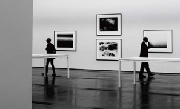
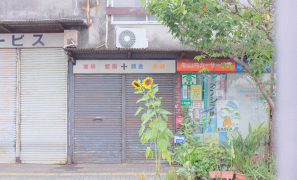
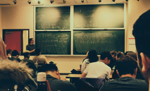
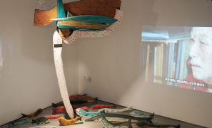
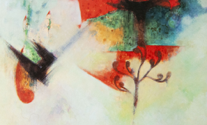
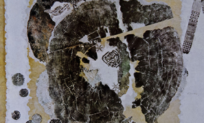
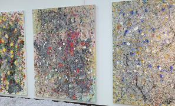

Exhibition

검색
News
-
삼화페인트, 경기도미술관과 경기도 문화예술 발전 협약
삼화페인트공업은 지난 5일 경기도미술관과 경기도 문화예술 발전을 위한 업무협약(MOU)을 체결했다고 6일 밝혔다. 경기도미술관이 있는 안산에는 삼화페인트 안산공장이 있다.
2024-09-06 -
[씨줄날줄] 뭉크전 & 프리즈 서울
프리즈는 아트바젤, 피악(FIAC)과 함께 세계 3대 아트페어로 꼽힌다. 2003년 영국 런던에서 처음 시작해 유럽, 미국 등으로 영역을 확장한 뒤 아시아 진출을 선언하고 2022년 첫 무대를 대한민국 서울로 삼았다. 올해 세 번째를 맞은 ‘프리즈 서울’이 그제 막을 올렸다. 처음부터 함께했던 국내 최대 규모 아트페어인 키아프와 이번에도 공동으로 행사를 열어 국내외 미술 애호가들의 심장을 뛰게 하고 있다.
2024-09-06 -
경북의 혼(魂)이 담긴 무형유산 전승자 공예품 한 자리…22일까지 청도박물관서 개최
경상북도의 우수한 무형유산 전승 공예품을 한자리에서 감상할 수 있는 전시회가 개최된다. 5일 경북도는 오는 22일까지 청도박물관 기획전시실에서 '경상북도 무형유산 전승공예전' 전시회를 개최한다고 밝혔다.
2024-09-06
-
[2024.09.04] 인사
하태진(전 홍익대 미술대학 교수)씨 별세·강재순씨 남편상·연수(국립강릉원주대 미술학과 교수) 희정씨 부친상·최성범(국립강릉원주대 체육학과 교수) 박훈(삼보종합관리 관리과장)씨 장인상=3일 오전9시30분 신촌세브란스병원 발인 5일 오전11시40분 (02)2227-7500
2024-09-04 -
[2024.09.02] 국가무형유산 소반장 보유자 인간문화재 추용호 장인 별세
추용호 국가무형유산 소반장 보유자가 지난달 30일 별세했다. 향년 74세. 소반은 음식 그릇을 올려놓는 작은 상이다. 소반을 만드는 기술 또는 그 장인을 소반장이라고 부른다. 고인은 전남 나주의 '나주반', 황해도 해주의 '해주반'과 함께 조선시대 3대 소반 중 하나로 손꼽히는 통영소반의 유일한 계승자였다. 박재영 기자
2024-09-02 -
[2024.08.26] 부고
현창기(전 국립대전현충원 원장)씨 별세: 상규(동신글로벌마리타임 대표이사) 정규(국립중앙박물관 행정지원과장)씨 부친, 원미애(에스앤더블유 유학원 대표) 윤지영(국립국악원 근무)씨 시부=23일 오후 9시15분 연세대세브란스병원. 발인 26일 오전 6시40분
2024-08-26
-
한국 현대 회화의 어제와 오늘: 2024 한국미술평론가협회 학술세미나
2024년 9월 13일(금) 오후 3시, 서울시립미술관 세마홀에서 '한국 현대 회화의 어제와 오늘'이라는 주제로 2024 한국미술평론가협회 학술세미나가 개최될 예정이다.
2024-09-02 -
새로운 울림: 인류세 시대의 예술과 기술: 15회 광주비엔날레 심포지엄
제15회 광주비엔날레 《판소리, 모두의 울림》(Pansori, a soundscape of the 21st century) 전시와 연계된 담론의 장(場)인 심포지엄이 9월 8일 개최된다. (재)광주비엔날레(대표이사 박양우)는 개막에 맞춰 세계적인 연사들과 함께 전시의 심층 이해와 다학제적 논의가 이뤄지는 심포지엄을 개최한다고 9일 밝혔다.
2024-08-30 -
故 강태희 미술이론과 명예교수 1주기 추모회
한국예술종합학교(총장 김대진) 미술원 미술이론과(원장 양정무 · 학과장 김연재)는 오는 9월 5일(목) 오후 4시 30분, 교수, 교직원, 학생 등이 참석하는 가운데 故 강태희 명예교수의 1주기 추모회를 개최한다.
2024-08-30
-
글로벌 감정인력 양성 (Global Appraisers Training) 온라인 교육 프로그램 모집공모
국제적 역량을 가진 차세대 전문인력 확충을 위해 미술품 감정인력 양성 전문기관인 미국감정가협회(AAA)와 [재]예술경영지원센터가 공동으로 기획한 본 교육프로그램에 많은 신청 바랍니다.
2024-09-02 -
2025 CICA 실험 영화 및 영상 국제전 공모
2025 CICA 실험 영화 및 영상 국제전에 참여할 국내외의 실험 영화 및 비디오 작품들을 공모합니다. 모집 장르는 실험 영화, 영상 작품 및 애니메이션입니다.
2024-08-29 -
아티스트 프롤로그 2025 작가 공모
아트센터 예술의 시간은 2025년 상반기 개최하는 연례전시 〈아티스트 프롤로그 2025〉에 참여할 작가를 공모합니다. 최종 선정된 3인(팀)의 작가는 2025년 4월에서 8월까지, 순차적으로 개인전을 개최하게 됩니다. 개인전이 열리는 공간은 아트센터 예술의 시간 4층 전시공간입니다.
2024-08-24
Column
-

(184)빼앗긴 들에도 봄은 오는가
봄이다. 입춘이 지났으니 절기상으로는 봄이다. 기온이 영하권을 살짝 맴돌고 있지만, 지역에 따라 꽃 몽우리가 올라오고 철모르는 꽃나무는 꽃을 활짝 피웠다.
-

(183)서울과 지방의 차이, 그 사이의 매개자
필자는 예술이 가장 재미있다고 생각했다. 이미지 하나가 그동안 살아왔던 나의 상식을 완벽히 깨트려 버리는 순간이 있다.
-
(182)동시대 한국미술 현장에서의 전통 읽기
사회적 거리두기가 완화되며 해외여행에 대한 욕구가 늘어나고 있다. 뮤지엄 큐레이터 17년차인 필자는 여행을 떠나면 늘 ‘한국관’ 혹은 ‘한국실’이 있는 해외박물관을 중심으로 꾸리게 된다.
-

(181)프랑스 사례로 살펴본 미술사교육의 전문화와 보편화
필자는 프랑스에서 미술사학을 전공했다. 학부 1,2학년 동안 고고학과 미술사학 과목들을 모두 이수해야 3학년 때 두 분야 중 하나를 선택하여 심화된 전문 지식을 터득할 기회를 가질 수 있었다.
-

윤석남 : 한국 여성주의미술의 대모
윤석남 작가는 1939년 만주 출생으로 성균관대 영문과 중퇴, 미국 미국 프랫인스티듀트 그래픽샌터에서 수학하였다.
-

이세득 : 한국 서정 추상의 대가
이세득은 1921년 함경남도 신흥군 출생으로 일본 제국미술학교를 졸업하고 1958년에는파리로 유학을 떠났다.
-

심경자 : 탁본기법을 활용하여 새로움을 펼쳐보인 작가
심경자는 1944년 경남 출생으로 수도사대 회화과를 졸업 후 68년 동대학원을 졸업하였다. 운보 김기창의 제자이며, 스승 김기창에 대한 아동그림책을 2002년에 집필하였다.
-

남궁원 : 허수아비 마을의 꿈을 실현한 화가
남궁원의 그림축제는 경기도 가평군 북면 백둔리 남송미술관과 에코뮤지엄 허수아비 마을에서 2024년 5월1일부터 6월2일까지 열린다. 이번 행사는 남궁원의 신작,
Service
-
서울아트가이드
-
달진닷컴 / 기타
Community
- 2024-08-30
- 2024-08-01
- 2024-07-22
-
문화살롱 5120 퍼포먼스 워크숍 <네가 있는 검은 꿈> 참여자 모집
2024-09-07 - 2024-09-07
- 2024-09-07
- 2024-08-29
-
(169)중국 최고 미술 대학에서 한국 미술가 4인 전시 개최
2024-08-29 - 2024-07-25
-
초대! 『디지털 폴리스』 출간 기념 엮은이 강연 (2024년 9월 8일 일 오후 2시)
2024-09-05 - 2024-09-02
- 2024-09-02